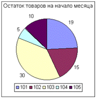
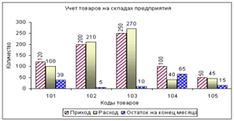

ЛЕКЦИЯ №19. (2часа)
ТЕМА: «ДЕЛОВАЯ ГРАФИКА В СРЕДЕ EXCEL»
Рассматриваемые вопросы:
1. Введение в деловую графику
2. Построение диаграммы
3. Редактирование диаграмм
4. Форматирование диаграмм
Литература: http://bseu.by/it/oivt/tema5v4.htm
1. Введение в деловую графику
Деловая графика предназначена для наглядного представления числовых данных, отображения соотношения различных значений или динамики изменения показателей.
Она включает диаграммы (графики) различных видов. В Excel диаграмма может быть создана на отдельном листе диаграмм или как графический объект на рабочем листе.
Основными элементами диаграммы являются: область диаграммы, область построения диаграммы, ряды и маркеры данных, оси координат, заголовки, легенда, линии сетки, подписи данных. Диаграмма имеет определенный тип и состоит из серий (рядов) данных и оформительских элементов (заголовка, осей, меток, легенды, произвольного текста).
Серией называется ряд (строка или столбец) точек данных, которые отображаются на диаграмме. Диаграмма по умолчанию строится в предположении, что серии расположены по рядам: текст из первого столбца таблицы данных будет вставлен в легенду в виде имен серий, а текст первого ряда (имена категорий) – в виде меток засечек горизонтальной строки.
Данные строки (или столбца) отображаются в диаграмме в виде ряда данных. Если для ряда данных используются значения строки, то значение столбцов образуют категории. Вертикальная ось (ОY) используется для шкалы значений. Все другие обозначения представлены на диаграмме в так называемой легенде. Легенда служит для идентификации рядов данных (категорий). Каждый ряд данных на диаграмме представлен определенным цветом или узором.
В зависимости от вида графического представления данных диаграммы различаются по типу. Excel предлагает пользователю различные типы диаграмм:
Диаграмма, вставленная в документ, динамически связана с таблицей данных, т.е. изменяется в соответствии со сделанными изменениями исходных данных.
2. Построение диаграммы
Построение диаграмм осуществляется с помощью Мастера диаграмм.
Рассмотрим порядок построения на основе таблицы 5.1. Учет товаров на складах предприятия круговой диаграммы, отображающей остаток каждого товара на складах предприятия на начало месяца. Диаграмму разместим на отдельном листе диаграмм с именем Остаток.
1. Выделите на листе Товары диапазон ячеек С4:С8 с исходными данными (область данных диаграммы).
2. Выполните команду Вставка ► Диаграмма или нажмите кнопку [Мастер диаграмм] на панели инструментов. Открывшеесяокно мастера диаграмм осуществит построение новой диаграммы за четыре шага.
3. В окне Мастер диаграмм (шаг 1 из 4): тип диаграммы на вкладке Стандартные в списке Тип выберите круговая, из форматов данного типа в списке Вид выберите вариант, описанный как Круговая диаграмма. Если нажать и удерживать кнопку [Просмотр результата],то можно увидеть образец диаграммы. Нажмите кнопку [Далее].
4. В окне Мастер диаграмм (шаг 2 из 4): источник данных диаграмм на вкладке Диапазон данных проверьте правильность установленного диапазона, а для задания ориентации рядов установите переключатель Ряды в столбцах. На вкладке Ряд установите курсор в поле Подписи категорий и, перейдя на лист Товары, выделите ячейки В4:В8 для задания в качестве элементов легенды код материала. Нажмите кнопку [Далее].
5. В окне диалога Мастер диаграмм (шаг 3 из 4): параметры диаграммы на вкладке Заголовки в поле Название диаграммы введите заголовок диаграммы – Остаток товаров на начало месяца. На вкладке Легенда установите флажок Добавить легенду и выберите размещение легенды – внизу. На вкладке Подписи данных в группе переключателей Подписи значений установите опцию – значение. Нажмите кнопку [Далее].
6. В окне диалога Мастер диаграмм (шаг 4 из 4); размещение диаграммы установите переключатель – отдельном, а в правом поле введите имя листа – Остаток. Нажмите кнопку [Готово]. Полученная диаграмма представлена на риунке.

3. Редактирование диаграмм
Созданные диаграммы можно корректировать, вплоть до изменения исходных данных и способа их представления. Редактирование диаграмм предполагает изменение типа диаграммы или ориентации данных, изменение визуальных эффектов. Можно также добавлять или удалять отдельные элементы, либо изменять определенные параметры. В Excel предусмотрена также возможность дополнения диаграмм другими рядами данных.
Диаграмму, созданную на рабочем листе, перед обработкой необходимо выделить двойным щелчком мыши. При выделении диаграммы на рабочем листе или листа диаграммы изменяется строка меню. В ней будут представлены команды, используемые для обработки и форматирования диаграмм.
Рассмотрим порядок изменения типа построенной диаграммы Остаток товаров на начало месяца на тип гистограмма.
1. Перейдите на лист Остаток.
2. Выполните команду Диаграмма►Тип диаграммы. В списке Тип выберите –гистограмма, Вид – Обычная гистограмма. Нажмите [ОК].
3. Выполните Диаграмма►Параметры диаграммы►вкладка Легенда. Снимите флажок Добавить легенду и нажмите [ОК].
Вид полученной диаграммы представлен на рисунке.
Рассмотрим порядок добавления на диаграмму новых рядов данных. Добавим к диаграмме Остаток товаров на начало месяца данные Приход, Расход и Остаток на конец месяца.
1. На листе Остаток выполните команду Диаграмма►Добавить данные. В диалоговом окне Новые данные установите курсор в полеДиапазон.
2. На листе Товары выделите с помощью мыши диапазон ячеек D4:F8, данными из которых будет дополнена диаграмма. Нажмите [ОК].
3. Выполните команду Диаграмма►Параметры диаграммы►вкладка Легенда. Установите флажок Добавить легенду и размещение – внизу. Нажмите [ОК].
На данной диаграмме основу рядов будут составлять показатели остатков на начало и конец месяца, прихода и расхода по каждому товару. Категориями выступают коды товаров.
4. Измените названия элементов легенды Ряд1, Ряд2 и Ряд3. Для этого выполните команду Диаграмма►Исходные данные►вкладка Ряд. В списке Рядвыделите элемент Ряд1, установите курсор в поле Имя и на листе Товарыактивизируйте ячейку С3, которая содержит заголовок Остаток товаров на начало месяца.
5. Далее в списке Ряд выделите элемент Ряд2, установите курсор в поле Имя и на листе Товары активизируйте ячейку D3, которая содержит заголовок Приход. Аналогично измените названия элементов Ряд3 и Ряд4, задав для них в качестве названия, содержимое ячеек Е3 и F3 листа Товары.
6. Нажмите [ОК] в окне Исходные данные.
Рассмотрим порядок изменения заголовка диаграммы и названий осей координат на диаграмме.
1. Выполните команду Диаграмма►Параметры диаграммы►вкладкаЗаголовки.
2. В поле Название диаграммы введите Учет товаров на складах предприятия.
3. В поле Ось Х (категорий) введите Коды товаров, а в поле Ось Y(значений) – Количество. Нажмите [OK].
Вид полученной диаграммы представлен на рисунке.
Рассмотрим алгоритм удаления на диаграмме ряда данных Остаток товаров на начало месяца.
1. На диаграмме выделите ряд Остаток товаров на начало месяца, щелкнув на одном из его маркеров.
2. Нажмите клавишу [Delete] на клавиатуре.
4. Форматирование диаграмм
Изменение вида элементов диаграммы (цвета фона, выбор узора, использование рамок и т.д.) или шрифта (типа, стиля начертания и размера используемых символов текста) выполняется с помощью форматирования. Окно форматирования для любого элемента диаграммы можно открыть с помощью двойного щелчка мыши на нем или путем активизации команды меню Формат.
Рассмотрим порядок изменения цвета для рядов данных, снятия линий сетки, установки параметров для элементов диаграммы: шрифта – 14 пт, выравнивание подписей значений для ряда Приход – под углом 90 градусов.
1. Активизируйте лист Остаток.
2. Выделите на диаграмме ряд данных Приход щелчком мыши по любому маркеру ряда на диаграмме.
3. Выполните команду Формат►Выделенный ряд►вкладка Вид. В поле Граница измените тип линий и цвет, установите флажок с тенью.
4. В поле Заливка выберите цвет для ряда щелчком мыши или воспользуйтесь кнопкой [Способы заливки] для выбора узора или текстуры для ряда. Нажмите [OK].
5. Самостоятельно измените цвет для остальных рядов.
6. Выделите Область диаграммы одним щелком мыши и выполните командуФормат► Выделенная область диаграммы► вкладка Шрифт.
7. Установите размер шрифта – 14 пт и нажмите [ОК].
8. Выделите подписи данных для ряда Приход щелчком по любой из подписей ряда и выполните Формат► Выделенные подписи данных►вкладка Выравнивание.
9. В поле Ориентация выберите 90 градусов и нажмите [ОК].
10. Выполните команду Диаграмма►Параметры диаграммы►вкладка Линии сетки. Снимите в этом окне все флажки и нажмите [ОК].
Вид полученной диаграммы представлен на рисунке.
